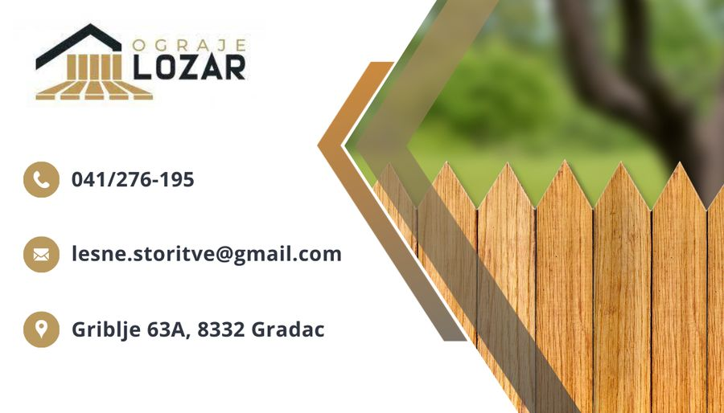
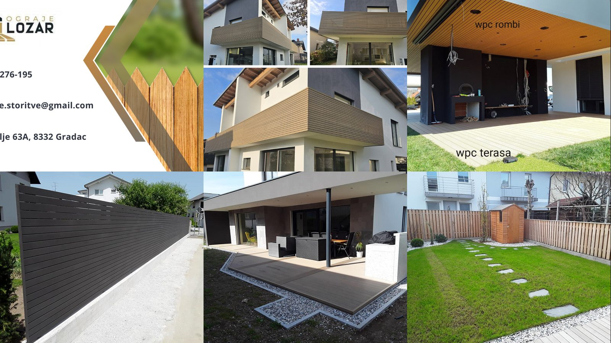
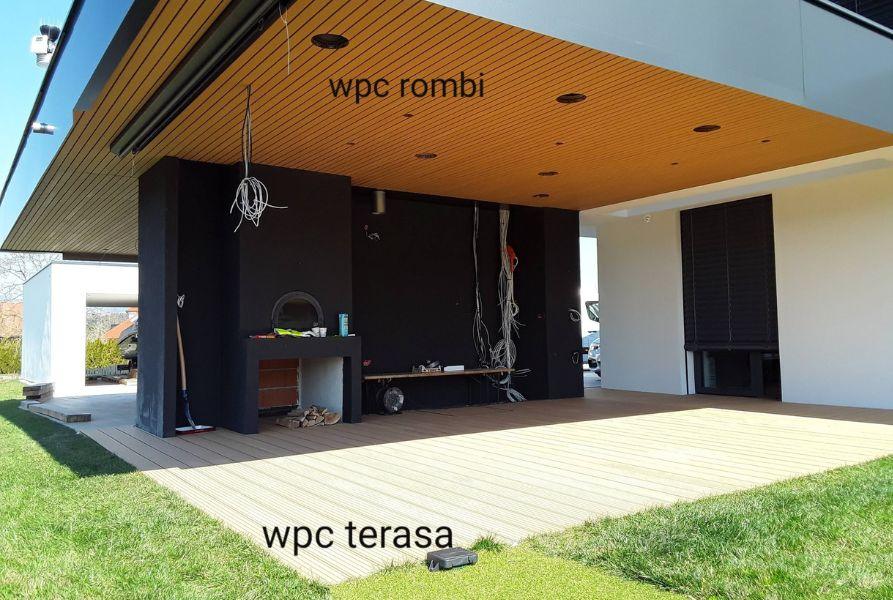
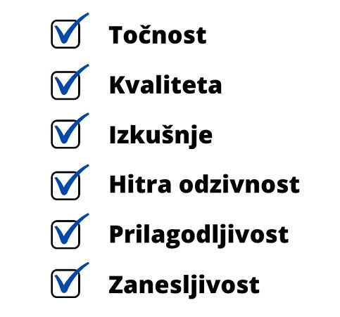

🌲 Lesene ograje
Klasičen videz toplega lesa, po meri izdelano in zaščiteno proti vremenu. Idealno za hiše, posestva in podeželje.
Načrtuj svojo →
Bela krajina · Slovenija · od 2009
Izdelava in montaža lesenih, WPC, panelnih in kovinskih ograj, lesenih nadstreškov s steklom ter WPC teras in fasad. Zanesljivo in natančno — po celotni Sloveniji.
Storitve
Pri Ograjah Lozar naredimo celoten postopek sami: svetovanje, izmero, izdelavo in montažo. Uporabljamo suho rezane lesene profile, kakovosten WPC kompozit in zaščitene kovine.

Klasičen videz toplega lesa, po meri izdelano in zaščiteno proti vremenu. Idealno za hiše, posestva in podeželje.
Načrtuj svojo →
Lesno-polimerski kompozit brez vzdrževanja: ne gnije, ne bledi, barvno obstojen. Popolnoma sodoben videz.
Načrtuj svojo →
Leseni nadstreški v kombinaciji s steklom — za teraso, avtomobile in sproščanje na prostem skozi celo leto.
Načrtuj svojega →
Montaža WPC teras in oblog fasad — odporno trpežne površine brez oljenja in brušenja.
Načrtuj →Hitra, ugodna in urejena rešitev za večje dolžine ograd.
Statično robustne konstrukcije, požarno varne, dolgoživost.
Material pripeljemo na lokacijo; nudimo tudi prodajo elementov.
Priporočimo material in detajle glede na teren in proračun.

„Najboljše razmerje med kvaliteto in ceno.“
Zakaj izbrati Ograje Lozar
Postopek
Pokličete ali pišete; skupaj uskladimo idejo, material in okvirni proračun.
Pridem na ogled, izmerim in svetujem — izmera je brezplačna.
Jasna, postavčna ponudba z rokom izvedbe in garancijskimi pogoji.
Elemente pripravimo po meri v delavnici, da je montaža hitra in čista.
Montiramo na lokaciji, uredimo okolico in predamo v uporabo.
O nas
OGRAJE LOZAR, Igor Lozar s.p. je družinsko obrtno podjetje z Gribelj pri Gradcu v Beli krajini. Registrirano je januarja 2009 kot Lesne in druge storitve, danes pa je prepoznano predvsem po ograjah in nadstreških.
Smo majhen, zbit mojstrski tim: kar naročimo, tudi naredimo. Zaradi tega se rok drži, kakovost pa se pozna v vsakem spoju. Opravljamo izdelavo, prodajo, dobavo in montažo ograj in lesenih nadstreškov v kombinaciji s steklom, montiramo pa tudi WPC terase in fasade.
Matrica dejavnosti je les, srce pa nam je pri detajlih, ki hišo dvignejo nad povprečje.

Mnenja strank
★★★★★
„Dogovorjena cela dolžina ograje, rok držan, detajli popolni. Priporočam vsem, ki hočejo mirno spati pod novo teraso.“
★★★★★
„WPC terasa izgleda kot nova tudi po dveh zimah. Ni oljenja, ni brušenja — samo uživamo.“
★★★★★
„Igor je svetoval material, ki smo ga sprva hoteli narobe. Rezultat je boljši in cenejši, kot smo načrtovali.“
Ocene zbirane prek platform MojMojster.net in neposrednih povratnih informacij strank.
Pogosta vprašanja
Cena je odvisna od materiala (les / WPC / kovina), višine, talnega tipa in terena. Po brezplačni izmeri dobite postavčno ponudbo na meter tekoči — brez skritih stroškov.
Les daje topel, naraven videz in zahteva občasno zaščito (oljenje ali lazura). WPC (lesno-polimerski kompozit) je praktično brez vzdrževanja, barvno obstojen in odporen proti vlagi — priljubljen pri novejših fasadah.
Od potrditve ponudbe običajno 2–6 tednov, odvisno od sezone in obsega. Manjše sanacije pogosto opravimo sproti.
Ne. Sedišče imamo v Gribljah pri Gradcu, delujemo pa po celotni Sloveniji — od Pomurja do Primorske.
Da. Izmer in svetovanje na kraju samem sta brezplačna in neobligatorna.
Kontakt
Kliknite, pokličite ali pišite — odgovorimo hitro, običajno istega dne.